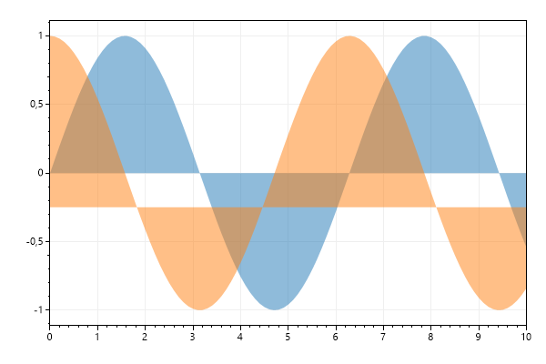
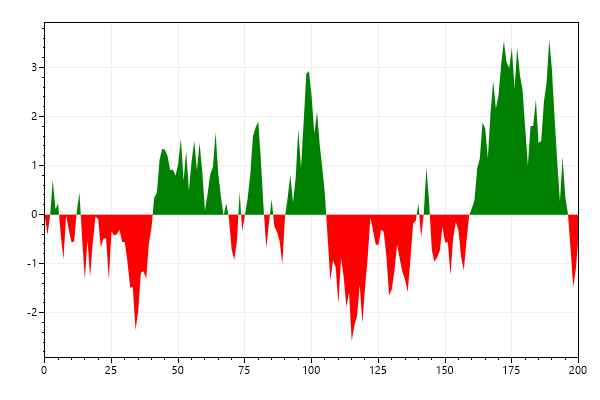
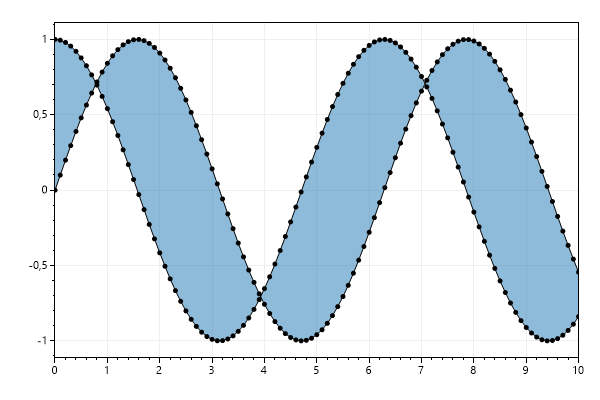
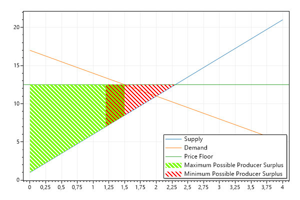

This page contains recipes for the Fill category.
Visit the Cookbook Home Page to view all cookbook recipes.
Visit the Cookbook Home Page to view all cookbook recipes.
Fill Under Curve
Fill methods help to create semitransparent polygons to fill the area under a curve. This can be used to give the appearance of shading under a scatter plot, even though the plottable created here is a polygon with optional edge color and fill color.
var plt = new ScottPlot.Plot(600, 400);
// create sample data
double[] xs = DataGen.Range(0, 10, .1, true);
double[] ys1 = DataGen.Sin(xs);
double[] ys2 = DataGen.Cos(xs);
// add filled polygons
plt.AddFill(xs, ys1);
plt.AddFill(xs, ys2, baseline: -.25);
// tighten the axis limits so we don't see lines on the edges
plt.SetAxisLimits(xMin: 0, xMax: 10);
plt.SaveFig("fill_curve.png");

Fill Above and Below
Sometimes you want to share the area under a curve, but change its color depending on which side of the baseline value it is. There's a helper method to make this easier.
var plt = new ScottPlot.Plot(600, 400);
// create sample data
Random rand = new Random(3);
double[] xs = DataGen.Consecutive(201);
double[] ys = DataGen.RandomWalk(rand, xs.Length);
// add filled polygons
plt.AddFillAboveAndBelow(xs, ys);
// tighten the axis limits so we don't see lines on the edges
plt.SetAxisLimits(xMin: 0, xMax: 200);
plt.SaveFig("fill_aboveBelow.png");

Fill Between Curves
Given two curves, a polygon can be created to give the appearance of shading between them. Here we will display two scatter plots, then create a polygon to fill the region between them.
var plt = new ScottPlot.Plot(600, 400);
// create sample data
double[] xs = DataGen.Range(0, 10, .1, true);
double[] ys1 = DataGen.Sin(xs);
double[] ys2 = DataGen.Cos(xs);
// add a polygon to fill the region between the two curves
plt.AddFill(xs, ys1, xs, ys2);
// add two scatter plots the traditional way
plt.AddScatter(xs, ys1, color: Color.Black);
plt.AddScatter(xs, ys2, color: Color.Black);
// tighten the axis limits so we don't see lines on the edges
plt.SetAxisLimits(xMin: 0, xMax: 10);
plt.SaveFig("fill_between.png");

Hatched Fill
Hatched Fills are useful for when there are overlapping fills, such as this diagram depicting the ranges of possible producer surpluses under a price floor.
var plt = new ScottPlot.Plot(600, 400);
double SupplyFunction(double q) => 5 * q + 1;
double DemandFunction(double q) => -3 * q + 17;
const double priceFloor = 12.5;
double[] xs = DataGen.Consecutive(5);
double[] supply = xs.Select(SupplyFunction).ToArray();
double[] demand = xs.Select(DemandFunction).ToArray();
plt.AddScatter(xs, supply, markerShape: MarkerShape.none, label: "Supply");
plt.AddScatter(xs, demand, markerShape: MarkerShape.none, label: "Demand");
plt.AddHorizontalLine(priceFloor, label: "Price Floor");
double[] maxProducerSurplusBounds = new double[] { 0, 1.5 };
var maxProducerSurplus = plt.AddFill(maxProducerSurplusBounds, maxProducerSurplusBounds.Select(SupplyFunction).ToArray(), maxProducerSurplusBounds, Enumerable.Repeat(priceFloor, 2).ToArray());
maxProducerSurplus.LineWidth = 0;
maxProducerSurplus.FillColor = Color.LawnGreen;
maxProducerSurplus.HatchColor = Color.Transparent;
maxProducerSurplus.HatchStyle = Drawing.HatchStyle.StripedWideDownwardDiagonal;
maxProducerSurplus.Label = "Maximum Possible Producer Surplus";
double[] minProducerSurplusBounds = new double[] { 1.2, 2.3 };
var minProducerSurplus = plt.AddFill(minProducerSurplusBounds, minProducerSurplusBounds.Select(SupplyFunction).ToArray(), minProducerSurplusBounds, Enumerable.Repeat(priceFloor, 2).ToArray());
minProducerSurplus.LineWidth = 0;
minProducerSurplus.FillColor = Color.Transparent;
minProducerSurplus.HatchColor = Color.Red;
minProducerSurplus.HatchStyle = Drawing.HatchStyle.StripedWideDownwardDiagonal;
minProducerSurplus.Label = "Minimum Possible Producer Surplus";
plt.Legend();
plt.SaveFig("fill_hatched.png");
